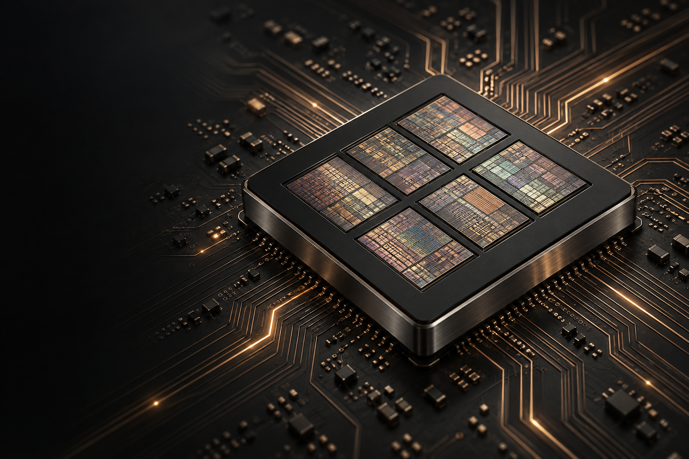
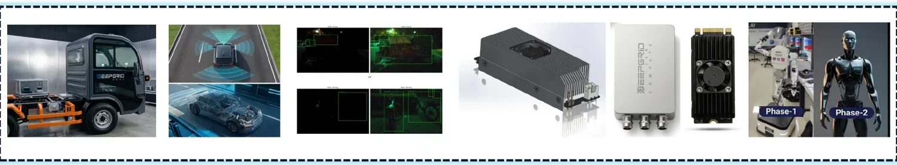

THE DEEPGRID PLATFORM
One silicon.
Infinite
possibilities.
A sovereign intelligence platform.
Fifteen products. One monolithic die.
From the silicon up.
ARCHITECTURAL VISUALIZATION
One architecture.
A shared foundation for autonomy.
01 / THE PLATFORM THESIS
ONE TAPEOUT. MANY APPLICATIONS.Intelligence starts
at the source.
DeepGrid builds the silicon beneath its autonomous systems. Cameras, radar, compute, vehicle control and AI work together on one common platform.
Dedicated firmware turns that foundation into fifteen product paths across four markets.
Product visualizations from the existing DeepGrid platform.
FROM THE DEEPGRID MATERIALS
The platform behind the promise.

Platform imagery reproduced from the DeepGrid information memorandum. FPGA demonstration: YOLOv11n at 40 fps, as reported in the source materials.
SOURCE-BACKED BRIEFING
Ask DeepGrid
Explore DeepGrid’s products, architecture and investment materials through source-backed answers and interactive product cards.
START A CONVERSATION WITH THE PLATFORM
What would you like to understand?
Ask about a product, the silicon architecture, the financial model, or a specific slide.
Searches DeepGrid’s existing dossier. Selected questions and source excerpts may be ranked by its existing briefing service.